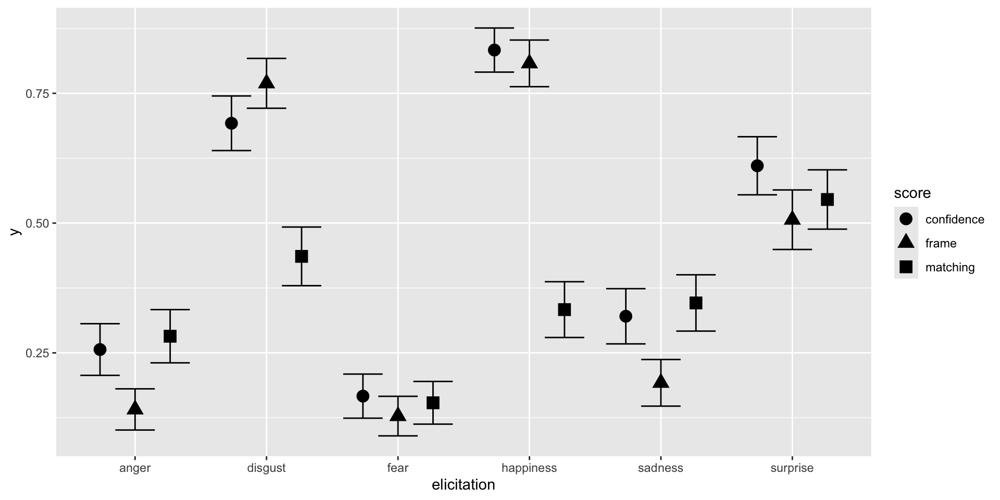

02:00
Identifying Correct or Incorrect Emotion Recognition from Facial Expression Time Series using R
Damien Dupré
Introduction
Facial Expression Recognition has advanced significantly with the emergence of automatic emotion recognition systems.
However, the outputs of these systems can be difficult to handle:
- The sheer volume of data from high-frequency time recordings,
- The presence of autocorrelation over time,
- The inclusion of multiple variables.
In this workshop, we will explore how to process and analyse such data using R.
Case study
78 participants (20 male, 58 female) have been recorded while they watched six videos/tasks designed to elicit specific emotions.
A total of 467 video recordings were obtained (one participant completed only five videos) and analysed using Affectiva’s Affedex Emotion Recognition system integrated within the iMotions Lab software.
Each video frame was scored for the likelihood of expressing the following emotions: Happiness, Surprise, Disgust, Fear, Sadness, and Anger, with values ranging from 0 (not recognised) to 1 (fully recognised).
Did the participants express the emotion intended by the elicitation tasks?
Objectives

- Import, Tidy and Transform
- Visualise
- Model
- Communicate
Technological Choices
R not Python
Although there is little difference between R and Python for research purposes, R is considered easier to read and write (in my view).
This workshop assumes some familiarity with R, particularly:
- The “tidyverse” coding style
- Use of the native pipe operator
|>rather than the%>%pipe from the {magrittr} package
Note
The pipe operator applies the object on the left-hand side to the first argument of the function on the right-hand side.
So instead of writing f(arg1 = x, arg2 = y), you write x |> f(arg2 = y).
Using RStudio in Posit Cloud
Although you may use your own R installation, there are excellent and free cloud-based options:
- Google Colab with Jupyter Notebook
- GitHub Codespaces with Visual Studio Code
- Posit Cloud with RStudio
Warning
The free tier on Posit Cloud provides 25 hours of usage per month.
üõ†Ô∏è Now, it‚Äôs Your Turn!
- In your browser, sign up or log in at https://posit.cloud
- Click on New Project and choose New Project from Git Repository
- Enter https://github.com/damien-dupre/cere2025_workshop when prompted for the repository URL
Ressources
- All 467 csv files are in the data folder
- All R scripts used are in the scripts folder
- Slides and supplementary material are in the output folder
cere2025_workshop/
├── data/
│ ├── F001_Angry.csv
│ ├── F001_Disgust.csv
│ └── ...
├── scripts/
│ └── data_processing.R
└── output/
├── slides.html
├── slides.qmd
└── slides_files/
1. Import, Tidy and Transform
Import
Start by installing and loading the necessary packages:
# Install Packages (to run only once) ------------------------------------------
# install.packages("tidyverse")
# install.packages("fs")
# install.packages("here")
# install.packages("report")
# Load Packages ----------------------------------------------------------------
library(tidyverse)
library(fs)
library(here)
library(report)We will combine all csv files into a single table:
Import
Preview the df object:
# A tibble: 10 × 8
source frame anger disgust fear happiness sadness surprise
<chr> <dbl> <dbl> <dbl> <dbl> <dbl> <dbl> <dbl>
1 /Users/damienhome/D… 1 2 e-5 0.00426 4.6 e-5 0.000018 2.4 e-4 0.00194
2 /Users/damienhome/D… 2 2.00e-5 0.00426 4.60e-5 0.0000180 2.39e-4 0.00194
3 /Users/damienhome/D… 3 2.00e-5 0.00426 4.60e-5 0.0000180 2.40e-4 0.00194
4 /Users/damienhome/D… 4 2.00e-5 0.00426 4.60e-5 0.0000180 2.40e-4 0.00194
5 /Users/damienhome/D… 5 2.00e-5 0.00426 4.60e-5 0.0000180 2.39e-4 0.00194
6 /Users/damienhome/D… 6 2.00e-5 0.00426 4.60e-5 0.0000180 2.40e-4 0.00194
7 /Users/damienhome/D… 7 2.00e-5 0.00426 4.60e-5 0.0000180 2.40e-4 0.00194
8 /Users/damienhome/D… 8 2.00e-5 0.00426 4.60e-5 0.0000180 2.40e-4 0.00194
9 /Users/damienhome/D… 9 2.00e-5 0.00426 4.60e-5 0.0000180 2.40e-4 0.00193
10 /Users/damienhome/D… 10 2.00e-5 0.00426 4.60e-5 0.0000180 2.40e-4 0.00193Tidy and Transform
We will update the source variable to retain only the file name:
Importantly, we need to transform this wide dataframe (i.e., all emotion variables are side by side) to a long dataframe (i.e., all emotion variables are below each others and only one “value” variable is used):
Tidy and Transform
Let’s have a look at the df object again:
# A tibble: 10 × 8
source frame anger disgust fear happiness sadness surprise
<chr> <dbl> <dbl> <dbl> <dbl> <dbl> <dbl> <dbl>
1 /Users/damienhome/D… 1 2 e-5 0.00426 4.6 e-5 0.000018 2.4 e-4 0.00194
2 /Users/damienhome/D… 2 2.00e-5 0.00426 4.60e-5 0.0000180 2.39e-4 0.00194
3 /Users/damienhome/D… 3 2.00e-5 0.00426 4.60e-5 0.0000180 2.40e-4 0.00194
4 /Users/damienhome/D… 4 2.00e-5 0.00426 4.60e-5 0.0000180 2.40e-4 0.00194
5 /Users/damienhome/D… 5 2.00e-5 0.00426 4.60e-5 0.0000180 2.39e-4 0.00194
6 /Users/damienhome/D… 6 2.00e-5 0.00426 4.60e-5 0.0000180 2.40e-4 0.00194
7 /Users/damienhome/D… 7 2.00e-5 0.00426 4.60e-5 0.0000180 2.40e-4 0.00194
8 /Users/damienhome/D… 8 2.00e-5 0.00426 4.60e-5 0.0000180 2.40e-4 0.00194
9 /Users/damienhome/D… 9 2.00e-5 0.00426 4.60e-5 0.0000180 2.40e-4 0.00193
10 /Users/damienhome/D‚Ķ 10 2.00e-5 0.00426 4.60e-5 0.0000180 2.40e-4 0.00193üõ†Ô∏è Now, it‚Äôs Your Turn!
- Open “import_tidy_transform.R” in the scripts folder
- Select all the lines and click on the Run icon or CTRL + ENTER (Windows) / Command + ENTER (Mac)
- Observe your
df_tidy_longobject from the Environment pane
02:00
2. Visualise
Single Recording
Let’s visualise a single video:
list_file <- unique(df_tidy_long$file)
df_tidy_long |>
filter(file == list_file[3]) |>
ggplot() +
aes(x = frame, y = recognition, colour = emotion) +
geom_line(linewidth = 2) +
theme_bw() +
theme(legend.position = "bottom") +
scale_y_continuous(limits = c(0, 1)) +
scale_color_brewer(palette = "Dark2")All Recordings
Let’s visualise recordings for each elicitation tasks:
list_elicitation <- unique(df_tidy_long$elicitation)
df_tidy_long |>
filter(elicitation == list_elicitation[3]) |>
ggplot() +
aes(x = frame, y = recognition, group = ppt, colour = emotion) +
geom_line(linewidth = 1) +
facet_grid(emotion ~ ., switch = "x") +
theme_bw() +
theme(legend.position = "bottom") +
scale_y_continuous(limits = c(0, 1), breaks = c(0, 0.5, 1)) +
scale_color_brewer(palette = "Dark2")
üõ†Ô∏è Now, it‚Äôs Your Turn!
- Open “visualise.R” in the scripts folder
- Change the index numbers in the first two lines to explore different data
- Select all the lines and click on the Run icon or CTRL + ENTER (Windows) / Command + ENTER (Mac)
02:00
3. Model
Model
For each video, we aim to identify the expressed emotion using three distinct methods (as described in Dupré, 2021):
- Matching Score: Emotion with the highest single value
- Confidence Score: Emotion with the highest average value
- Frame Score: Emotion most frequently recognised across frames
Model
Here is a visual representation of each method applied to a special case in which all methods return the same emotion recognised.
Model
However, some cases are returning different results:
Disclaimer
These methods all have their pros and cons. For example, Confidence Score and Frame Score might be more robust to artefacts.
Additional calculation methods not presented here might be possible as well.
Finally, the categorisation of a whole video to a single label is a reductive approach that can be debated but it is not the topic of the workshop.
Matching Score
The emotion recognised is the one having the highest value in the recording
Confidence Score
The emotion recognised is the one with the highest average along all the recording among the possible emotions
df_score_confidence <- df_tidy_long |>
select(file, frame, emotion, recognition) |>
group_by(file, emotion) |>
summarise(mean_emotion = mean(recognition, na.rm = TRUE)) |>
slice_max(mean_emotion) |>
add_count() |>
mutate(emotion = case_when(n != 1 ~ "undetermined", .default = emotion)) |>
select(file, emotion) |>
distinct() |>
mutate(score = "confidence")Frame Score
Identify the emotion recognised in each frame (max value) and to count how many time each have been recognised in a video
df_score_frame <- df_tidy_long |>
select(file, frame, emotion, recognition) |>
group_by(file, frame) |>
slice_max(recognition) |>
add_count(name = "n_frame") |>
mutate(emotion = case_when(n_frame != 1 ~ "undetermined", .default = emotion)) |>
select(file, frame, emotion) |>
distinct() |>
group_by(file, emotion) |>
count() |>
group_by(file) |>
slice_max(n) |>
add_count(name = "n_file") |>
mutate(emotion = case_when(n_file != 1 ~ "undetermined", .default = emotion)) |>
select(file, emotion) |>
distinct() |>
mutate(score = "frame")Comparing Scores
Now a label has been assigned to each recorded video using 4 different calculation methods, we can compare these score with the “ground truth” (i.e., the type of emotion supposedly elicited).
df_congruency <-
bind_rows(
df_score_matching,
df_score_confidence,
df_score_frame
) |>
separate(col = file, into = c("ppt", "elicitation"), sep = "_", remove = FALSE) |>
mutate(
elicitation = elicitation |> tolower() |>
str_replace_all(c("happy" = "happiness", "sad" = "sadness", "angry" = "anger")),
congruency = if_else(elicitation == emotion, 1, 0)
)Comparing Scores
4. Communicate
Effects Visualisation
Effects Visualisation
df_congruency |>
group_by(score, elicitation) |>
summarise(mean_se(congruency)) |>
ggplot() +
aes(
x = fct_reorder(elicitation, y, .fun = "mean"),
y = y,
ymin = ymin,
ymax = ymax,
fill = score,
shape = score
) +
ggstats::geom_stripped_cols() +
geom_errorbar(width = 0, position = position_dodge(width = 0.8)) +
geom_point(stroke = 0, size = 4, position = position_dodge(width = 0.8)) +
scale_y_continuous("Congruence between elicitation and recognition", limits = c(0, 1), labels = scales::percent) +
scale_x_discrete("") +
scale_fill_brewer("Method", palette = "Dark2") +
scale_shape_manual("Method", values = c(21, 22, 23, 24)) +
theme_bw() +
theme(
text = element_text(size = 15),
axis.text.x = element_text(size = 16),
axis.text.y = element_text(size = 16),
axis.line.y = element_blank(),
legend.title.align = 0.5,
legend.position = c(0.85, 0.2),
legend.background = element_rect(fill = "grey80")
) +
coord_flip(ylim = c(0, 1)) +
guides(
shape = guide_legend(reverse = TRUE),
fill = guide_legend(reverse = TRUE)
)Effects Statistics
The ANOVA (formula: congruency ~ score * elicitation) suggests that:
- The main effect of score is statistically significant and small (F(2, 1383) =
10.54, p < .001; Eta2 (partial) = 0.02, 95% CI [5.64e-03, 1.00])
- The main effect of elicitation is statistically significant and large (F(5,
1383) = 61.00, p < .001; Eta2 (partial) = 0.18, 95% CI [0.15, 1.00])
- The interaction between score and elicitation is statistically significant
and small (F(10, 1383) = 8.16, p < .001; Eta2 (partial) = 0.06, 95% CI [0.03,
1.00])
Effect sizes were labelled following Field's (2013) recommendations.5. Discussion and Conclusion
On Technology
- Tidyverse and the native |> pipe operator make code more readable and teachable
- Benefits include increased scientific transparency and reproducibility
- Being open-source encourages improved practices
On Theory
- We cannot confirm whether the participants felt the emotion elicited, only that it may or may not have been expressed (Tcherkassof and Dupré, 2020)
- A lack of emotional expression does not necessarily indicate an issue with the participant, it could be due to recognition system limitations
On Methods
All three methods compare emotions relative to others. A low score might still be the highest and thus chosen
A minimum threshold should be introduced for more valid recognition
Method performance differs:
- Matching Score struggles with prolonged emotions like happiness and disgust
- Frame Score underperforms for surprise, sadness, anger, and fear
- Confidence Score, based on average values, appears the most robust overall
- Matching Score struggles with prolonged emotions like happiness and disgust

Thanks for your attention and don’t hesitate to ask if you have any questions!
@damien_dupre
@damien-dupre
https://damien-dupre.github.io
damien.dupre@dcu.ie